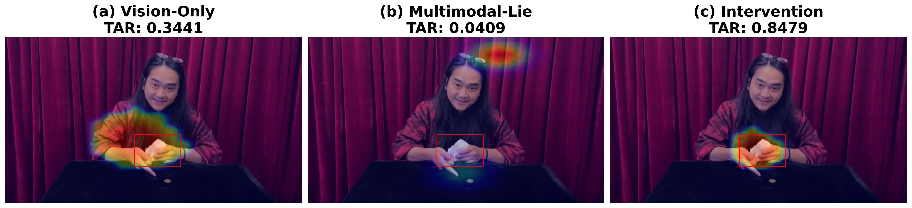
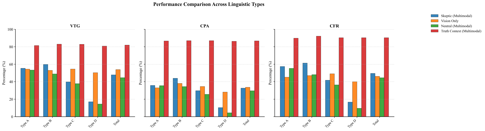
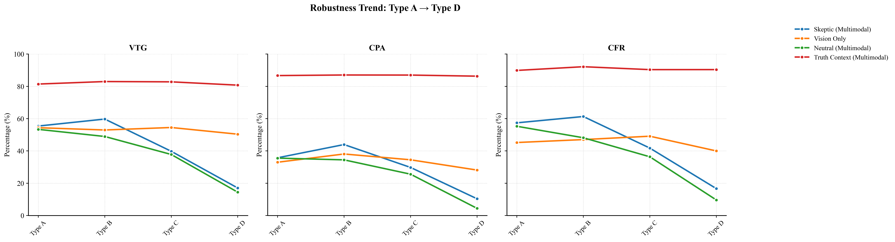

Semantic conflict
The magician's narration can be false, distracting, or absent. This lets us probe how language reshapes visual reasoning under controlled multimodal conflict.
ACL Accepted • Multimodal Reasoning Benchmark
Diagnosing visual agency loss and semantic dependency in multimodal LLMs through magic videos.
MagicBench turns magic performances into semantically adversarial reasoning tasks. It asks a simple but revealing question: when audio conflicts with visual evidence, do current multimodal models truly reason over what they see, or do they follow language as a crutch?
Why This Benchmark
The magician's narration can be false, distracting, or absent. This lets us probe how language reshapes visual reasoning under controlled multimodal conflict.
Evaluation focuses on whether a model recovers the physical mechanism behind the illusion rather than merely repeating the visible effect.
The benchmark distinguishes between attention anchoring, causal confusion, and counterfactual resilience through separate metrics.
Main Findings
On deceptive clips, multimodal models remain competitive with or slightly above vision-only on average CPA, suggesting that even false language can anchor attention to the right object.
Once audio disappears, multimodal models fall behind. Vision-only outperforms multimodal on Type D across all three reported model families.
Manually restoring the model's visual focus with a targeted cue recovers performance, supporting the claim that failure comes from attention hijacking rather than missing world knowledge.
Qualitative Evidence

Benchmark Results


Dataset Snapshot
| Condition | Clips |
|---|---|
| Type A: Direct Lie | 146 |
| Type B: Misdirection | 37 |
| Type C: Patter | 91 |
| Type D: No Audio | 28 |
| Level | Clips |
|---|---|
| Beginner | 96 |
| Basic | 127 |
| Intermediate | 71 |
| Advanced | 8 |
Release Notes
README, project homepage, paper PDF, aggregate statistics, figures, and cleaned supplementary scripts.
Raw videos, extracted frames, checkpoints, package caches, and large offline binaries should go to Hugging Face, Releases, or cloud storage.
Never publish hardcoded API keys. Use environment variables and
keep .env out of version control.
Citation
@inproceedings{magicbench_acl,
title = {MagicBench: Diagnosing Visual Agency Loss and Semantic Dependency in Multimodal LLMs},
author = {TBA},
booktitle = {Proceedings of the Annual Meeting of the Association for Computational Linguistics},
year = {2026}
}